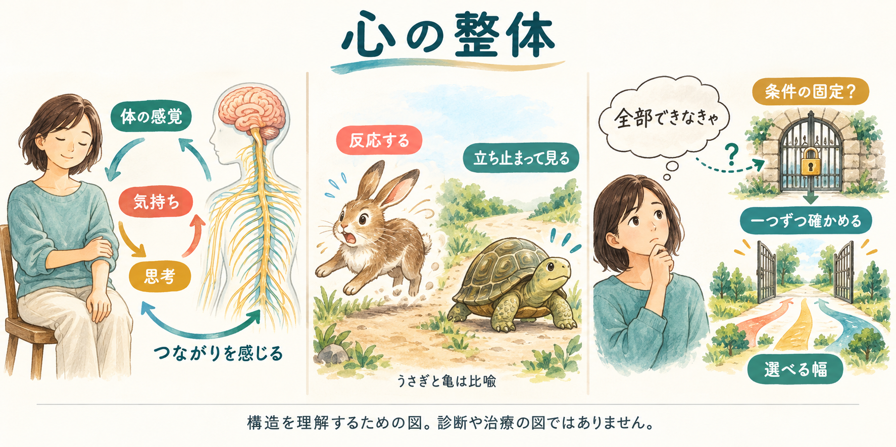

考え方だけを直す、という話ではない。
同じ出来事の中に、体の反応も、気持ちも、頭の中の言葉も、実際の動作もあります。薫ちゃんの心の整体は、どれかを悪者にせず、一つの場面に並べて見ていく対話です。
思考をよく使う人なら、困りごとは頭の中の正解探しや自己評価に表れることもあります。体のどこかに出ているはず、と探すのではありません。
体の感じも、気持ちも、一緒に見る
今、どんな感じ？
緊張している時、体はどんな感じでしょう。頭にはどんな言葉が浮かぶでしょう。同じ場面で、一つずつ聞きます。「分からない」でも大丈夫です。
困っているところだけを、見ない
体のつらさをみる時は、つらい場所だけでなく、ほかの場所の動きも確かめることがあります。心の整体でも、つらい気持ちだけでなく、「こうしなければ」と考えていないかを、一緒に見ます。
どちらも、理由を決めつけずに確かめるための見方です。特定の考え方を肩や腰に当てはめる話ではありません。
体の整体と、心の整体を並べる
| 見るところ | 身体をみる例 | 心の整体で確かめること |
|---|---|---|
| 表に出た反応 | 肩がつらい、という訴え | 頭の中で同じことを考える、書けない、など本人が語った反応 |
| ほかの場所も見る | 肩以外の動きも確かめる | 「こうしなければ」と思っていないか聞く |
| 何を使い続けている？ | ほかの場所が代わりに動いているか | 答えを探し続ける、ずっと我慢する、などがあるか聞く |
| 変わったか見る | 動きやつらさに違いがあるか確かめる | 話した後、気持ちや選べることが変わったか聞く |
仮の例で、一筋の流れを見る
自分の中の決まり？
最後まで書けないと、取り組んだとは思えない
選びにくいこと？
今日はここまで。ひと言だけ書く。そうして終わりにしにくい
頭の中ですること？
最後まで書ける答えを、ずっと探している
表に出る反応？
書けない。何もしていない、と自分を評価する
「取り組んだ」と思えるのは、どこからでしょう。全部書けたら？ 一問に答えたら？ ひと言書けたら？ その人に聞いてみます。
そのうえで、途中で終えると困ること、助かることを、本人が望む時に一緒に見ます。話した後で何か変わったかも聞きます。変わらなければ、こちらの見方を考え直します。
薫ちゃんが実際にしてきたこと
本人の言葉を聞く。抽象的な評価を、一つの動作や場面へ戻す。本人が大事にしていることと、そのための方法を分ける。そして反対側を問い、どんな変化があったか本人に確かめる。
体・心・頭の、今の感じへ戻す
10月4日のかおる塾では、手で触れる体験と、今感じていることを確かめる対話を行いました。触れる動作の詳細は薫ちゃんの直後の報告、温度を確かめる問いと返答はZoom記録にあります。
そこで示されたのは、体の反応が分かりにくいと感じる一方、温度は分かるという体験。同じ動作から何を感じるかを、こちらの感覚で決めない。観察者になれたかどうかを採点するのではなく、その人が今感じていることを確かめます。
言葉が変わる瞬間も、分からないも残す
個人セッションでは、直後に「すっきりした」と本人が語った記録があります。また別の対話では、成果だけで評価していた場面に、制作スキルの変化という本人の言葉が出てきました。
一方、記入式ワークでは「質問の意味が分からない」と返ってきた記録もあります。それは本人を直す材料ではなく、こちらの問いを作り直す材料です。
科学の根拠と、実践の根拠
身体感覚と感情の関係
心拍のタイミングを判断する課題と脳活動を調べた研究があります。身体の内側の感覚を捉えることと情動の関係を考える資料です。
Critchleyら・2004年の実験研究感じたことを言葉にする研究
感情刺激に言葉を付ける課題で、脳活動の変化が報告されています。「どんな言語化でも必ず楽になる」という証明ではありません。
Liebermanら・2007年の実験研究身体の地域間相互依存というモデル
訴えのある部位以外の働きも評価する臨床モデル。心の整体では、つらいところ以外も確かめる、という考え方の参考にします。
Suekiら・2013年のレビュー研究の知見、薫ちゃんの対話の記録、AIの仮説は別の根拠です。心の整体の方法全体や、認知を見つければ反応が必ず消失することが科学的に証明された、とは説明しません。
言葉を作るのは、こちらの仕事
「こんな考え方があるのかな」と、AIとコーチが分かりやすい言葉にします。本人は、近いか違うかを教えてくれれば大丈夫です。
実際にどう感じるか、何を選ぶかは本人のもの。詳しい図も残しながら、一つずつ確かめます。
よっちゃんの整体図を見る